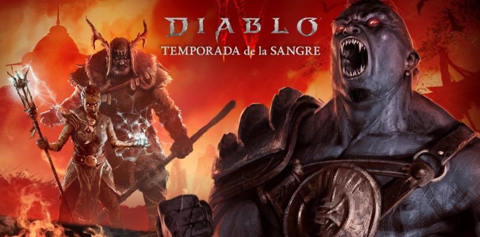
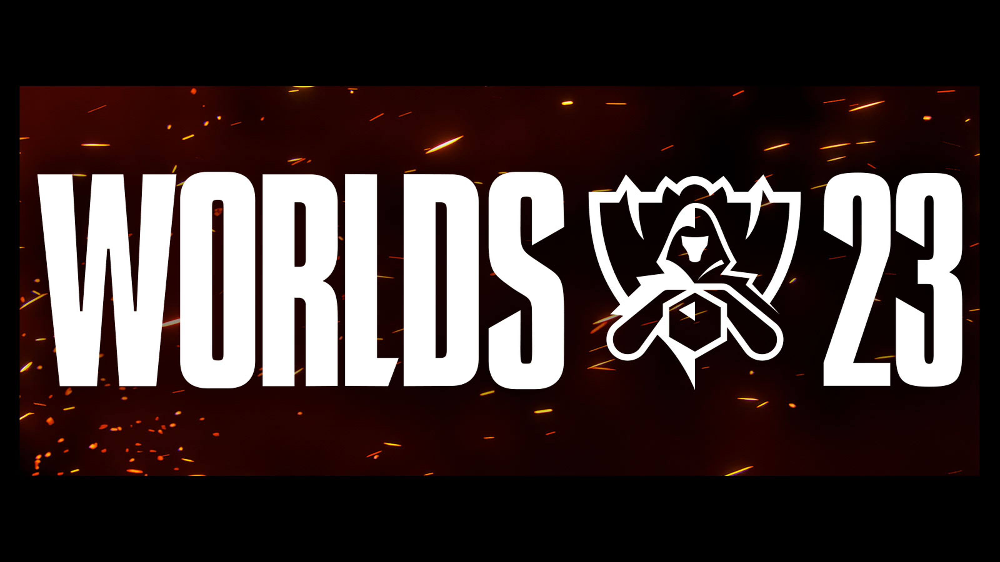

The Binding of Isaac
En el transcurso del viaje de un niño llamado Isaac, los jugadores encontrarán extraños tesoros que cambiarán la forma de Isaac, le darán habilidades y poderes sobrehumanos que le permitirán luchar contra hordas de criaturas aterradoras y diabólicas, descubrir secretos y abrirse camino a su supervivencia.

Baldur's Gate 3
Disfruta de la aventura online con un grupo de hasta cuatro jugadores. Primero, te secuestran; luego, te infectan y, al final, te pierdes. Te estás convirtiendo en un monstruo, pero, a medida que la corrupción crece en tu interior, también crece tu poder.

Path Of Exile
Eres un Exiliado esforzándote por sobrevivir en el oscuro continente de Wraeclast mientras luchas para conseguir poder que te permitirá vengarte de quienes te hicieron daño. Creado por jugadores expertos, Path of Exile es un RPG de Acción online que se desarrolla en un oscuro mundo de fantasía.

Diablo IV
La lucha eterna entre los Altos Cielos y los Infiernos Abrasadores se desata mientras el caos amenaza con consumir Santuario. Con incesantes demonios a los que matar, ingentes facultades que dominar, mazmorras de pesadilla y un botín legendario, este extenso mundo abierto promete aventura y devastación.
Keep talking and nobody explodes
En Keep Talking and Nobody Explodes un jugador está atrapado con una bomba de relojería que debe desactivar. Los otros jugadores son los "expertos" y tendrán que darle instrucciones para desactivarla descifrando la información del Manual de Desactivación de Bombas.

Elden Ring
Elden Ring tiene lugar en las Tierras Intermedias, un continente ficticio gobernado por diferentes semidioses. Anteriormente estaba gobernado por la Reina Marika la Eterna, la cual actuaba como guardiana del Círculo de Elden, una poderosa fuerza que se manifiesta como el concepto físico del orden.
12/09/23
Unity da marcha atrás: no cobrará por cada descarga de juegos creados con la plataforma
Unity ha decidido dar marcha atrás en los cambios que habían anunciado para su política de precios a partir de enero de 2024. La compañía pretendía cobrar una cantidad por cada instalación de los juegos desarrollados con Unity, lo cual afectaría principalmente a los pequeños desarrolladores. Sin embargo, debido a la controversia generada y las protestas de la comunidad de desarrolladores, Unity ha cambiado su decisión. Ahora, Unity ya no cobrará por cada instalación de un videojuego a los juegos existentes y tampoco cobrará una cuota por instalación a los desarrolladores que estén suscritos a sus planes Unity Personal o Plus. En cambio, para los juegos que estén sujetos a la cuota de ejecución, se dará la opción de cobrar el 2,5% de los ingresos o una cantidad calculada sobre el número de usuarios nuevos que interactúan con el juego cada mes. Este cambio ha generado protestas y migraciones a otras plataformas, lo que ha dañado la reputación de Unity.

10/10/23
Tras casi dos años de largas negociaciones, Microsoft ya tiene vía libre para su gran compra: Activision
Microsoft ha logrado finalmente que el acuerdo sea aprobado, lo que marca el desenlace de su lucha de 20 meses por adquirir Activision. El matiz clave que permitió la consecución del acuerdo fue la venta de los derechos de los juegos en la nube de Activision Blizzard a Ubisoft. Esto evita que Microsoft tenga un monopolio sobre los juegos de Activision Blizzard en Xbox Cloud Gaming, ya que podrán lanzarse en otras plataformas de juego en la nube. Todos los actores involucrados se muestran satisfechos con el acuerdo, y Microsoft está a punto de cerrar definitivamente la compra. Se espera que los efectos de esta adquisición se noten en los próximos meses.
13/09/23
Blizzard retrasa el inicio de la Temporada 2 de Diablo IV pòr problemas de última hora
Blizzard ha decidido retrasar el comienzo de la esperada Temporada 2 de Diablo IV debido a algunos inconvenientes de última hora. Aunque la compañía no ha revelado los detalles exactos de estos problemas, han emitido un comunicado oficial en las redes sociales para informar a los jugadores. En este comunicado, Blizzard ha expresado su disculpa por las complicaciones y ha anunciado que la hora de inicio de la Season of Blood se retrasará unas horas para resolver todos los inconvenientes. Han asegurado a los jugadores que compartirán todas las novedades tan pronto como las tengan disponibles.
15/09/23
Worlds LoL 2023: Horarios del primer día del Main Event en formato suizo
El formato de los Worlds en años anteriores y cómo ha cambiado con el formato suizo. En resumen, los partidos son a mejor de 1 y un equipo debe ganar 3 partidos para clasificar a los playoffs. Si un equipo pierde tres partidos, queda eliminado. Los partidos decisivos para clasificar o ser eliminado se juegan a mejor de 3. Cuando un equipo alcanza dos victorias o dos derrotas, todos sus partidos serán a mejor de tres hasta que se clasifiquen o sean eliminados. Los enfrentamientos siempre serán entre equipos con el mismo récord de victorias y derrotas, lo que significa que habrá menos opciones después de cada día.
Ranking
Puntuación 10
Puntuación 9.95
Puntuación 9.5
Puntuación 9.2
Puntuación 9
Puntuación 8.90